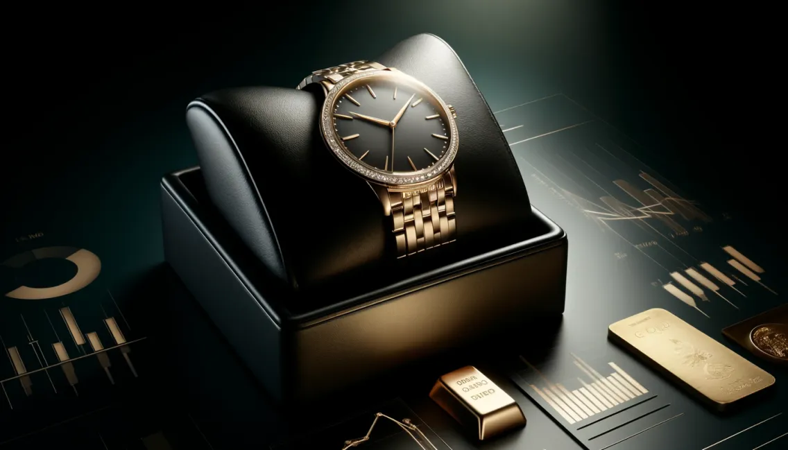

Why Invest in a Luxury Watch?
A luxury watch is far more than a tool for telling time. It represents a remarkable fusion of artistry, engineering, and timeless appeal. Whether you are an enthusiast, a collector, or someone simply looking to make a meaningful purchase, investing in a luxury watch is about embracing craftsmanship, style, and legacy.
Craftsmanship: Precision and Perfection
Luxury watches are masterpieces created by skilled artisans who dedicate countless hours to ensure each component is meticulously crafted. Every gear, spring, and dial is a testament to precision engineering and intricate hand-assembly. These watches are not mass-produced but are often made in limited numbers, adding exclusivity and value to every piece.
A Symbol of Status and Style
Owning a luxury watch is a statement. It reflects your taste, success, and appreciation for the finer things in life. Whether it’s the iconic Rolex Submariner, a sleek Omega Speedmaster, or an elegant Cartier Tank, these watches transcend trends and are universally recognized symbols of sophistication.
Legacy and Emotional Value
Luxury watches often carry a personal and emotional significance. Many are passed down through generations, becoming treasured family heirlooms. Imagine wearing a vintage watch that once adorned the wrist of a grandparent—a timepiece becomes a connection to the past, a reminder of shared memories and achievements.
Financial Investment
While luxury watches are prized for their design and quality, they are also an investment. Iconic models, such as the Rolex Daytona or Audemars Piguet Royal Oak, appreciate in value over time. Vintage pieces and limited editions often command premium prices at auctions, making them a smart financial choice for collectors and enthusiasts.
A Blend of Tradition and Innovation
Luxury watchmakers skillfully balance tradition with innovation. While they honor centuries-old techniques, they also integrate modern technology and materials to improve durability and performance. This fusion of classic craftsmanship with cutting-edge advancements makes luxury watches enduringly relevant and desirable.
Conclusion
Owning a luxury watch is about more than tracking time—it’s about appreciating the artistry, embracing timeless style, and connecting with a legacy that can be cherished for generations. Whether you’re drawn to the precision engineering of Swiss-made watches or the aesthetic allure of luxury designs, these timepieces offer unmatched value and a unique sense of personal fulfillment.